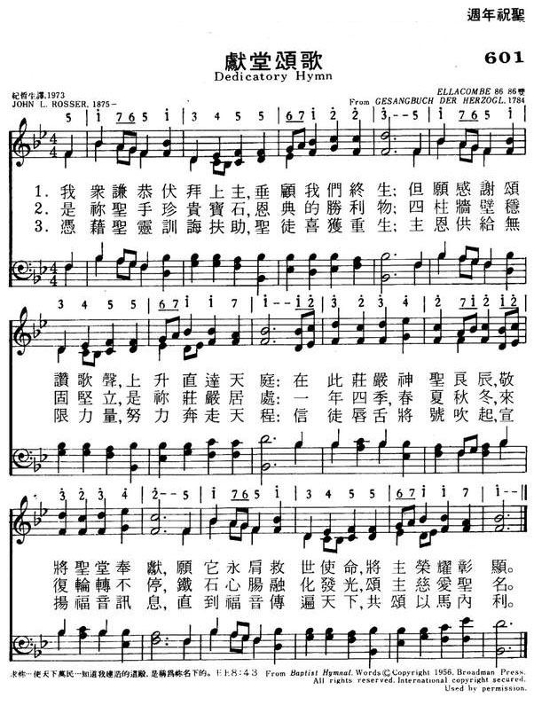
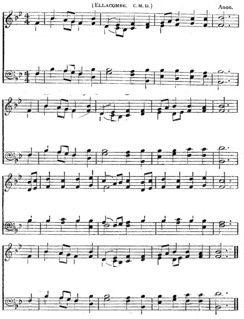

|
|
|
|
To Him who hallows all our days |
601献堂颂歌
1.我众谦恭伏拜上主,垂顾我们终生;
但愿感谢颂赞歌声,上升直达天 在此庄严神圣良辰,敬将圣堂奉献; 愿它永肩救世使命,将主荣耀彰显. 2.是称圣手珍宝贵石,恩典的胜利物; 四柱墙壁稳固坚立,是称庄严居处; 一年四季,春夏秋冬,来后轮转不停, 铁石心肠融化发光,颂主慈爱圣名. 3.凭藉圣灵训诲扶住,圣徒喜获重生; 主恩供给无限力量,努力奔走天程; 信徒唇舌将号吹起,宣扬福音讯息, 直到福音传遍天下,共颂以马内利. |
|
https://www.mred365.cn/szxg/7604.html
 http://ehymnbook.org/CMMS/hymnSong.php?id=pd01305 ELLACOMBE
 |
|
|
|
|
-

Hymn Tune: "Ellacombe" https://youtu.be/YLY1XZ3NUwY -
The Day of Resurrection! (Ellacombe) https://youtu.be/jh9f0nyz5wE
| Short Name: | John L. Rosser |
| Full Name: | Rosser, John L. |
Tune Information
| Title: | ELLACOMBE |
| Meter: | 7.6.7.6 D |
| Incipit: | 51765 13455 67122 |
| Key: | A Major |
| Source: | Gesangbuch der Herzogl. Hofkapelle, Würtemberg, 1784 |
| Copyright: | Public Domain |
Notes
Published in a chapel hymnal for the Duke of Würtemberg (Gesangbuch der Herzogl, 1784), ELLACOMBE (the name of a village in Devonshire, England) was first set to the words "Ave Maria, klarer und lichter Morgenstern." During the first half of the nineteenth century various German hymnals altered the tune. Since ELLACOMBE's inclusion in the 1868 Appendix to Hymns Ancient and Modern, where it was set to John Daniell's children's hymn "Come, Sing with Holy Gladness," its use throughout the English-speaking world has spread.
ELLACOMBE is a rounded bar form (AABA), rather cheerful in character, and easily sung in harmony. Try having a soloist sing the story in stanzas 1 and 2, with the children (or entire congregation) joining in on stanza 3.
--Psalter Hymnal Handbook, 1998